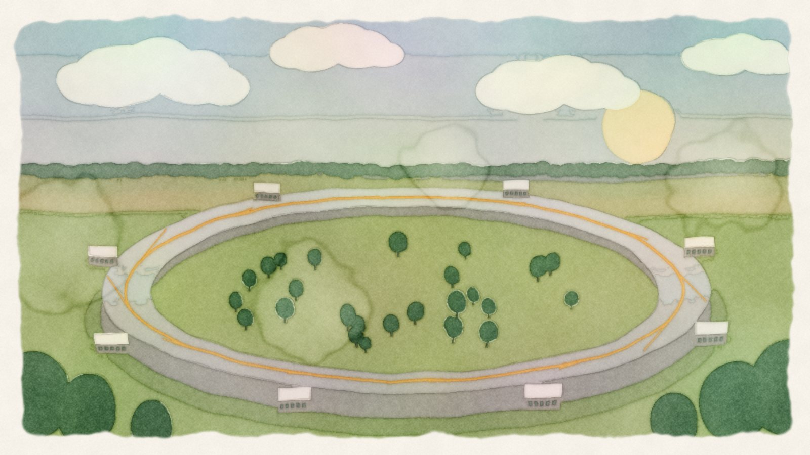
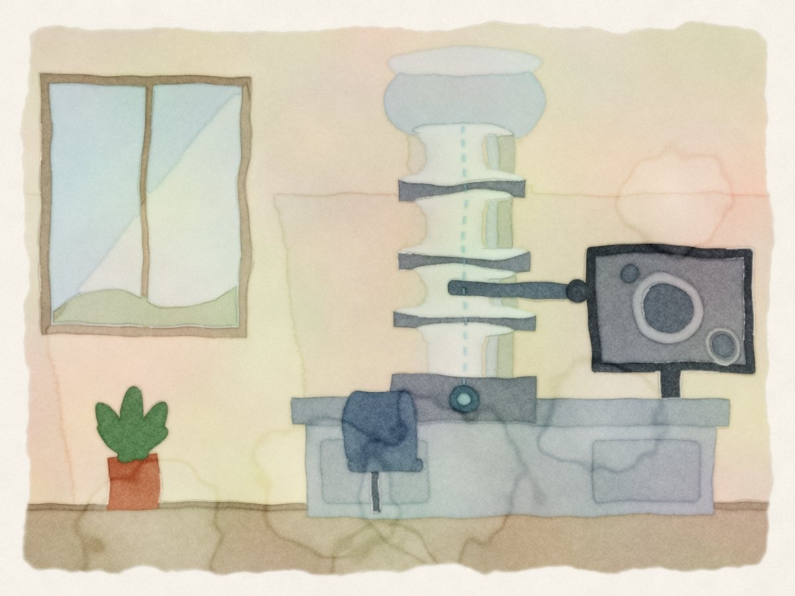
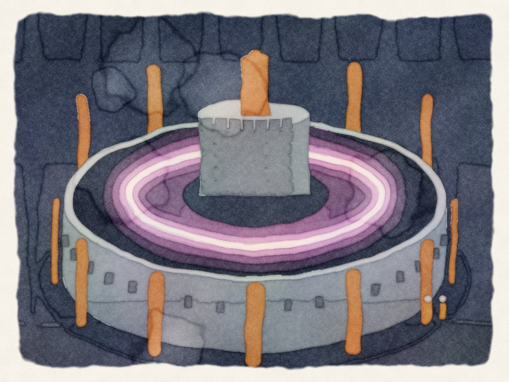
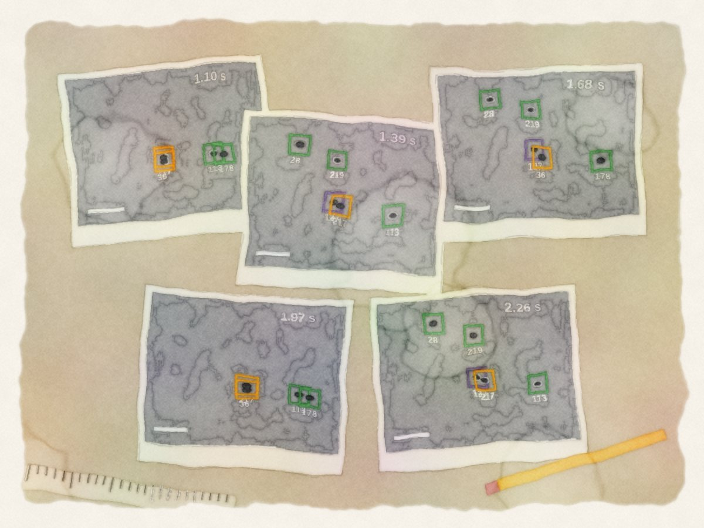
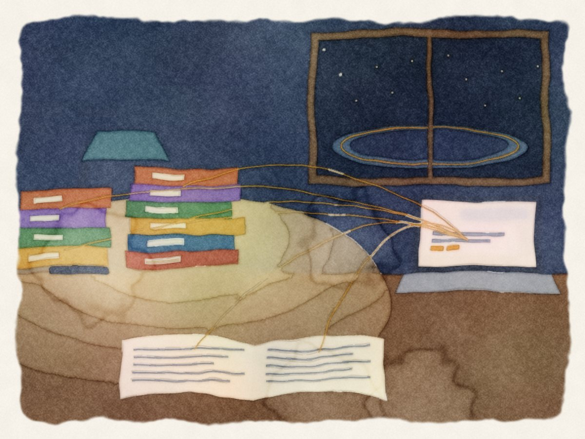

First I watched nanomaterials change inside an electron microscope. Then I taught computers to watch for me. Now I develop AI that performs experiments and monitors particle accelerators. Here is what each step taught me.
By Rajat Sainju · AI/ML Scientist, Advanced Photon Source, Argonne National Laboratory

A storage-ring light source at dawn. Every illustration here was drawn as flat shapes, then painted by one OpenCV watercolor filter (how).
MMetals are never still. Inside a fusion reactor, helium plasma grows a porous fuzz on tungsten armour. Inside a fission reactor, neutrons knock atoms out of place in cascades that leave tiny defects behind. During my Ph.D. I watched changes like these happen in real time, inside an environmental electron microscope.
The microscope produced far more video than any person could read. So I built neural networks that segment and track what we see. Today, at Argonne's Advanced Photon Source, the reading problem has grown again: logbooks, work requests and live machine data from a facility that runs day and night.
The thread is the same. Each time, the hard part was turning a flood of observations into a few trustworthy numbers.
10papers, 2019 to 2026
12papers and abstracts on fission and fusion materials
~80co-authors
…citations, live from Semantic Scholar
I
Chapter one · Materials for fission and fusion
Metals that face the fire
Reactors ask metals to survive what almost nothing else does: neutron bombardment, helium plasma and, in an accident, hot air. With an environmental TEM I could heat a sample in real gas, or put it under an ion beam, and film it changing at the nanometre scale.

Two kinds of reactor, two kinds of damage
Where the microscopy in this chapter and the next fits.

Fusion
Tungsten armours the divertor of ITER and is likely to line future reactors such as DEMO.
Helium from the plasma grows a porous nanofuzz on its surface.
If an accident lets air in, hot tungsten oxidizes and can shed volatile, radioactive oxide dust.
You would expect helium-damaged, spongy tungsten to oxidize faster than the pristine metal if air leaks into a reactor. We measured it directly, in an environmental TEM at atmospheric pressure, and got the first kinetic data for substrate-free nanofuzz. In 1 bar of dry air at 500 °C, it oxidized about seven times slower than pristine tungsten. A durable, amorphous skin of oxide, likely promoted by the irradiation, kept it passivated.
Nanofuzz oxidized about 7× slower
Parabolic oxidation rate at 500 °C in 1 bar dry air.
Nanofuzz rate measured in situ ( at 400 °C). The pristine bar is drawn from the paper's “about seven times” comparison with literature values for bulk W. Sainju et al., Acta Materialia 2024.
Fusion · Nugget 2
“Which face you oxidize can matter more than 100 degrees.”
In the first in-situ ETEM study of tungsten oxidation, we heated pristine and ion-irradiated tungsten from 500 to 900 °C and saw two very different oxide scales grow side by side. A nanocrystalline scale on one grain orientation grew much faster at 800 °C than a highly textured scale did at 900 °C. For a reactor wall, grain orientation, not just temperature, sets the pace (Togaru, Sainju et al., Materials Characterization 2021).
Fission · Nugget 3
“Radiation damage is a movie, not a photograph.”
At Argonne's IVEM-Tandem facility, which recreates reactor-like irradiation inside a microscope, nickel was bombarded with 1 MeV krypton ions at 700 °C and filmed at 103 frames per second. Defect clusters about 8 nm across flickered into existence and faded, some within 19 milliseconds, some after more than 6 seconds. Those lifetimes are the physics. Measuring them meant following thousands of tiny, fading dots by hand, which is where chapter two begins.
Beyond the reactor · Nugget 4
“The average hides the story.”
The same microscope works on catalysts. We oxidized 207 nickel nanoparticles, 4 to 50 nm across, at 600 °C in a gas cell. Measured all together, the batch took about 80 seconds to turn to oxide. Followed one by one, single particles took anywhere from about one second to more than a minute.
Size decides the ending. In stage one, oxide nucleates and eats inward a fixed distance, about 5.5 nm. If the particle's radius is smaller than that, it simply becomes a solid ball of oxide. If it is larger, nickel keeps diffusing outward through the oxide, leaves vacancies behind, and the particle hollows out.
Will this particle end up hollow?
Drag the starting radius, then press play. The dashed ring marks the critical thickness, 5.52 ± 1.45 nm, measured on large particles.
2 nm25 nm
Drawn to scale. The outcome rule, the critical thickness and the timings come from Sainju et al., ACS Nano 2022. The animation itself is schematic.

II
Chapter two · Teaching computers to watch
The video was too long to read
The irradiation video from nugget 3 ran 1,200 frames, under 12 seconds. Labelling every defect in it took three experts about 20 weeks.
Fission · Nugget 5
“Judge the model by the physics, not the leaderboard.”
DefectTrack follows defect clusters, about 20 pixels wide, as they flicker into existence under an ion beam and fade away. Standard tracking scores tell you how often boxes match. Materials scientists care about something else: the distribution of defect lifetimes, which hints at what kind of defect each one is. So we tested the tracker the way you would test an expert.
Watch a tracker work
Simulation
Synthetic frames, one every 9.7 ms, with defects about 20 px wide, as in the real video. Each colour is one tracked identity. A dashed box is a frame where a faint defect slips past the detector and the tracker fills the gap.
0.0 ms
Lifetimes of finished tracks
0 tracks finished
Illustration only. Lifetimes are drawn from an exponential distribution; the real ones in the paper ran from 19.4 ms to 6.4 s.
Two of four experts were measurably off. The tracker was not.
Each lifetime distribution tested against the hand-labelled truth (Kolmogorov–Smirnov). A dot in the shaded band, p < 0.05, differs significantly from the truth.
DefectTrack processed the whole video in 57 seconds. The experts averaged 5.25 hours to track a tenth of the defects. Sainju et al., Scientific Reports 2022, Table 3.
The same idea guided our earlier segmentation network, DefectSegNet. It finds dislocations, precipitates and voids in HT-9, a martensitic steel studied for reactor service, imaged before and after neutron irradiation at 412 °C. A pixel-accuracy score is a means, not an end. What matters is whether the dislocation densities and the void and precipitate sizes you compute from its output match the truth.
A segmentation network beat the expert average on 8 of 10 measurements
Error against hand-labelled truth for defects in HT-9 steel. each expertexpert averageDefectSegNet
Roberts, Haile, Sainju et al., Scientific Reports 2019, Tables 2 and 3. Size spreads (standard deviations) are left out here.
III
Chapter three · At the Advanced Photon Source
Machines that read the facility
A light source keeps its memory in logbooks, documents, work requests, chat and live control-system data. The answers staff need are in there, scattered.

Nugget 6
“An answer is only as good as its citations.”
APS-RAG lets staff ask plain questions and get answers that point to their sources. It searches three ways at once, then checks its own evidence. When the evidence is weak, it rewrites the question and searches again before it answers. We evaluate it on APS-Bench, a benchmark grounded in the facility's real operations.
A demo has to answer one question well. A deployed agent has to keep answering, safely, for people who rely on it. With colleagues across the APS and Argonne, I helped write down what that takes, from beamline control to knowledge retrieval, in a perspective on deploying agents at user facilities.
The work, in numbers
Three themes, one drift
Each dot is a paper, sized by its citations; a gold halo marks work on fission or fusion materials. Rings are conference abstracts. Hover or tap a dot.
Papers and the people on them
Coloured dots are papers; small dots are co-authors. I am the dark dot in the middle. Hover or tap a person to see what we wrote together.